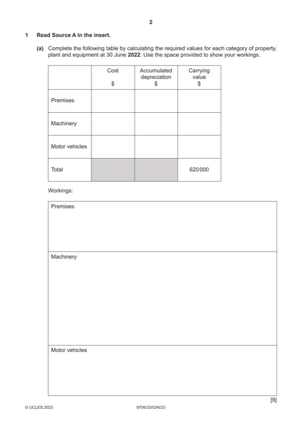

Question 1

Original paper page 2
Part 1(a) — solution
- W1 (480 000 0.5) 0.02 15 = 72 000 (1)
- W2 [12 000/(1 – 0.8) + 24 000/(1 – 0.6)] (1) 2 (1) = 240 000
- W3 240 000 – 36 000 = 204 000 (1)OF OR (240 000/2) + [(240 000/4 – 12 000) + (240 000/4 – 24 000)] = 204 000 (1)OF
- W4 12 000 + 24 000 = 36 000 (1)
- W5 620 000 – 408 000 – 36 000 = 176 000 (1)OF
- W6 250 000 – 176 000 = 74 000 (1)OF
Mark points
- W1 (480 000 0.5) 0.02 15 = 72 000 (1)
- W2 [12 000/(1 – 0.8) + 24 000/(1 – 0.6)] (1) 2 (1) = 240 000
- W3 240 000 – 36 000 = 204 000 (1)OF OR (240 000/2) + [(240 000/4 – 12 000) + (240 000/4 – 24 000)] = 204 000 (1)OF
- W4 12 000 + 24 000 = 36 000 (1)
- W5 620 000 – 408 000 – 36 000 = 176 000 (1)OF
- W6 250 000 – 176 000 = 74 000 (1)OF
Part 1(b) — solution
Prepare the schedule of non-current assets to use as a note to the financial statements for the year ended 14
Mark points
- Include the ideas shown in the solution above.
Part 1(c)(i) — solution
State one implication of this for each of: 1
the directors
The directors should consider replacing the computer system with one which provides automatic back up (1).
Staff training should be improved (1)
The directors will be personally liable as they will sign the financial statements if the figures are not correct. (1)
Accept other valid responses
Max 1
Mark points
- Include the ideas shown in the solution above.
Part 1(c)(ii) — solution
State one implication of this for each of: 1
the auditors.
The auditors might need to undertake extra investigations to ensure that the financial statements give a true and fair view
(1).
The auditors might advise the directors to improve the accounting system (1).
The auditors will struggle to verify the figures stated in financial statements as no records are available hence can give a
qualified report. (1)
Accept other valid responses
Max 1
Mark points
- Include the ideas shown in the solution above.